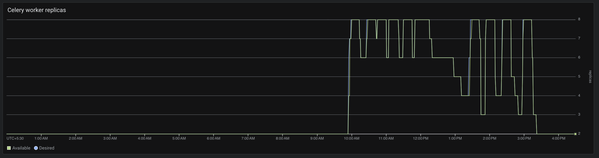

Infrastructure & Environments
CARE Fundamentals Webinar Series · Session 3
- Tech stack & deployment modes
- Components
- Hardware & sizing
- Scaling & provisioning checklist
- Cost estimates
- Staging → Production
- Metabase dashboards
- Run CARE locally
How the pieces talk to each other

Container-based, runs anywhere
Cloud
- Deployed on GCP, AWS, DigitalOcean
- Official path: GKE + Cloud SQL + GCS via
gcp_template - AWS example: ECS + Aurora PostgreSQL + ElastiCache + S3 via
care-ecs-tofu - Monitoring on GCP: Google Managed Prometheus
- Managed DB / storage recommended
On-premise
- Same images on a hospital / state server
- Docker Compose (like this workshop) or self-managed Kubernetes
- The full stack can run on your own servers
- Host your own monitoring and logging
- You own backups, patching, TLS
Connectivity
- Users reach FE + API over HTTPS
- DB and Redis stay private — never public
- Outbound internet for plugs (ABDM, SMS, email) and image pulls
- On GCP, outbound traffic leaves via Cloud NAT with a static IP — easy to allow-list with partners and third-party services
- CARE Frontend is static files: host it anywhere. We run it in Kubernetes to share the API gateway IP
The official GCP blueprint
OpenTofu modules — applied in order
pre-infra/— APIs, optional DNS zoneKMS/— key ring & keysinfra/— VPC, GKE, Cloud SQL, GCS, Cloud Armor, GitHub WIFdeploy/— namespace, secrets, Helm releases
tfvars live in Secret Manager as tofu-tfvars-<env>; never in git.
Run in each module folder
The full infrastructure deploys in under an hour.
export BACKEND_BUCKET=<state-bucket> export PROJECT_ID=<project> export ENV_NAME=<env> make init make pull-tfvars make plan make deploy
From the gcp_template README.
Helm charts — what each installs
| care_be | Backend API, Celery worker, Celery Beat (+ HPAs) |
| care_fe | Frontend (Nginx serving the React app) |
| redis | Redis 8 — cache and job queue open source |
| gateway | Gateway API load balancer, HTTPS, Let's Encrypt certificate |
| cert-manager | Issues and renews TLS certificates (upstream Jetstack chart) open source |
| metabase | Metabase analytics dashboards open source |
| care_metrics_exporter | Exports Celery queue depth to Prometheus |
| dcm4chee | DICOM server + OHIF viewer (only if enable_dicom) open source |
open source = community projects we package and configure, not built by us.
Core vs optional components
Frontend
React SPA on Nginx. Required.
Backend
API + Worker + Beat from one image. Required.
PostgreSQL
Primary DB (+ read replica on GCP). Required.
Redis + Storage
Broker/cache and file store. Required.
Metabase
Analytics dashboards, own metadata DB. Optional.
AI engine
Works with any OpenAI-compatible model endpoint. On GCP deployments we use Vertex AI with models hosted in India. Optional.
DICOM
dcm4chee stores medical images (X-ray, CT, MRI) and lets clinicians view them in the browser. Optional.
Plugs
Django apps that add features to CARE without changing core code. Optional.
Sample: care_hello · Enable: pluggable apps guide
Per-component resources
| Component | Copies | CPU each | Memory each |
|---|---|---|---|
| Backend API | 2 | 0.5 vCPU | 1 GB |
| Celery Worker | 1 | 0.5 vCPU | 0.5 GB |
| Celery Beat | 1 | 0.15 vCPU | 0.25 GB |
| Frontend | 2 | 0.1 vCPU | 0.125 GB |
| Redis | 1 | 0.1 vCPU | 0.125 GB |
| PostgreSQL | 1 | 2 vCPU | 3.75 GB RAM + 10–15 GB SSD |
| Total — core CARE | ~4 vCPU | ~8 GB RAM + 15 GB SSD | |
| Metabase (optional) | 1 | 0.5 vCPU | 1.5 GB |
| PostgreSQL read replica (optional) | 1 | 1 vCPU | 3.75 GB RAM + 10–15 GB SSD |
| Total — with analytics | ~5.5 vCPU | ~13 GB RAM + 30 GB SSD |
CPU / memory = what to reserve per copy (Helm chart requests). Leave headroom — the backend can burst to 1.5 vCPU / 2 GB per copy.
PostgreSQL size is the same as the managed Cloud SQL instances we run today.
Baseline to start with
Small
1 node · ~$230/mo
- Single-node cluster: 2 vCPU / 8 GB
- Use the minimum resources in
sample.tfvars - 1 copy of each service
- Database: 2 vCPU / 3.75 GB, no replica
- Cost based on our TeleICU staging
District rollout
~10 vCPU · 40 GB · ~$400–600/mo
- Total for the whole instance, database included
- 2–4 API copies, 1–2 workers
- Database + 1 read replica
- Where most live instances run
Large deployment
Scaled on real usage
- Grow from the district setup based on how users actually use the platform
- Autoscaling on API and workers
- Add nodes, database size or high availability when metrics show the need
- Cost grows with the resources you add
Defaults work in most cases; you are free to change node size and per-component resources. Costs: Google list prices (asia-south1) × provisioned resources, not a billing export.
Autoscaling with HPA
Autoscaling is a built-in Kubernetes feature (Horizontal Pod Autoscaler). We use it to add or remove CARE backend and worker copies automatically based on usage. The defaults are a starting point — tune the min/max copies and the scaling trigger to match how your users actually use CARE.
Backend API
- HPA on CPU, template default 2 → 6 pods at 80%
api_autoscaling_min/max_replicasinhelm_config- Scale-down waits 15 min (
stabilizationWindowSeconds: 900)
Celery Worker
- Same HPA pattern, default 2 → 6 at 80%
- Live example: 2 → 8 pods at 60% CPU
- Watch queue depth — the alert fires at > 200 waiting tasks

Checklist
Decide first
- Environments: dev, staging, QA, production
- Where it runs: GCP, AWS, any other cloud, or on-prem
- Optional components: Metabase, DICOM, AI features
- Plugs and features needed
- Domains: every public component gets its own subdomain (web, API, Metabase, DICOM)
Set up
- Cloud project and billing
- Fill in the config and run the gcp_template modules in order
- Pick node size, database size and autoscaling limits
- DNS and HTTPS for each subdomain, alert emails
- Backups verified, restore tested
- Guard against accidental deletion: GCP organisation policies and deletion protection (other clouds have similar safeguards)
Staging: configure, test, train
Where everything happens first
Every change lands on staging first, then production — so no surprises in production.
- Dedicated GCP project with the full gcp_template stack
- Builds from the
developref ofcare/care_fe - New plugs, value sets, roles and config tested here
- Training runs on staging, never production
How the deploy-states-sample pipeline works
- Build: build
careandcare_feimages from the chosen commit, push to Artifact Registry - Deploy: pick the environment and image tags
- Check the images exist, else stop
- Write the new tags into the environment's config (Secret Manager)
- Run OpenTofu plan and open a GitHub issue with the plan
- Wait for an approver to comment
approved(ordenied, or time out) - On approval, apply — the new version goes live
Dashboards with Metabase
Optional — only for analytics
- Needs its own small database to store dashboards, questions and users — on GCP we provision a separate Cloud SQL instance for it
- Runs as a single pod and is memory-heavy: plan about 2 GB RAM (live instances use ~1.4 GB)
- Installed from the metabase chart, served on its own subdomain
- First-time setup (admin account, connecting a database): Metabase setup guide
Connect to CARE data — two ways
- Read replica (GCP default): Cloud SQL replica, reporting never loads the primary
- Read-only SQL user on the CARE DB — simpler, works anywhere, including on-prem
Prefer the replica for heavy dashboards.
Run CARE on your own machine
Steps
# 1. Get the workshop repo + CARE sources git clone https://github.com/jesbinjoseph/care-session.git && cd care-session git clone --depth 1 -b develop https://github.com/ohcnetwork/care.git git clone --depth 1 -b develop https://github.com/ohcnetwork/care_fe.git # 2. Local config (never overwrite an existing .env) test -f .env || cp .env.example .env cp frontend.env.production.local care_fe/.env.production.local # 3. Build and start everything docker compose up -d --build --wait # 4. Check it works curl -f http://localhost:9000/ping/ open http://localhost:4000 # 5. Load demo data (synthetic, local only) docker compose exec backend python -m pip install \ --target /tmp/care-fixtures-deps 'Faker==38.2.0' docker compose exec -e PYTHONPATH=/tmp/care-fixtures-deps \ -e 'DJANGO_ALLOWED_HOSTS=["localhost","127.0.0.1","backend","testserver"]' \ backend python manage.py load_fixtures
What you get
- Needs only Docker with Compose
- 7 services: frontend, backend, worker, beat, PostgreSQL, Redis, local S3 storage
- Beat runs database migrations first, then backend and worker start
- Frontend on
localhost:4000, API onlocalhost:9000 - Demo data is fake — never load fixtures on a real instance
- Stop with
docker compose down— your data is kept - Full guide: care-session README